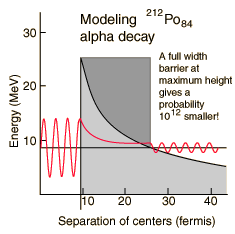

Modeling Polonium-212 Alpha Half-life
|  |
The incredible range of alpha decay half-lives can be modeled with quantum mechanical tunneling. The illustration represents the barrier faced by an alpha particle in polonium-212, which emits an 8.78 MeV alpha particle with a half-life of 0.3 microseconds. The following characteristics of the nuclear environment can be calculated from a basic model of the nucleus:
|
The shape of the barrier must obviously be taken into account since it drops rapidly. But it is instructive to calculate the half-life for a rectangular barrier of that height and width. Using the barrier penetration calculation gives a half-life of 1.5 x 107 seconds, about 13 orders of magnitude longer than the observed half-life. This gives some insight into the large range of alpha half-lives; the tunneling probability depends very strongly on the nature of the barrier. The probability depends exponentially on the height and width, and in this case the height is dropping like 1/r with distance from the nucleus.
 |
A better tunneling probability can be obtained by breaking the barrier into segments and multiplying the successive tunneling probabilities according to the basic rules for combining probabilities. The calculated tunneling probabilities for the segments are shown in the table.
|
When this tunneling probability is used to calculate the half-life, a value of 0.25 microseconds is obtained. This is surprisingly close to the measured value of 0.3 microseconds, considering that an incorrect barrier can take you off many orders of magnitude. It should be admitted that the same calculation for other nuclei does not yield such close agreement, but this example shows that the observed half-lives are within the range which can be calculated from quantum mechanical tunneling.
| What could you do to change the half-life? |
Alpha Decay Concepts
References
Rohlf
Sec 7-4
Eisberg & Resnick
Sec 16-2
| HyperPhysics***** Nuclear | R Nave |